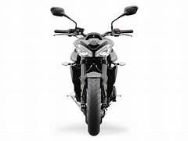
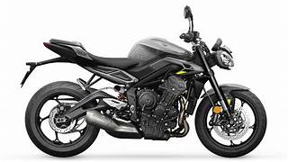

The Triumph Street Triple 765 R is designed as the more accessible, "street-focused" version of the 765 line, offering a balance of high-performance racing DNA with everyday usability.

The 765 R features a high-specification chassis designed for agility and precision. Suspension: Equipped with fully adjustable Showa 41mm Separate Function Big Piston Forks (SFF-BP) and a Showa piggyback reservoir monoshock. Brakes: Features twin 310mm floating discs with Brembo M4.32 4-piston radial monobloc calipers, providing strong and progressive stopping power. Weight: It has a wet weight of approximately 189 kg, contributing to its reputation for nimble handling.

Despite being the R
model, it is packed with advanced rider electronics:
Riding Modes: Four selectable modes (Rain, Road, Sport, and Rider-configurable) that adjust throttle response and traction control settings.
Safety Systems: Includes Optimized Cornering ABS and switchable Optimized Cornering Traction Control, supported by an Inertial Measurement Unit.
Display: Features a multi-functional instrument cluster with a personalizable TFT display.
Since its launch in 2007, the Street Triple range has grown to what it is today, now equipped with the class-leading 765cc engine. Using technology and insights learnt from the Moto2™ World Championship, the latest Street Triple Range accelerates itself into the ultimate track variant.